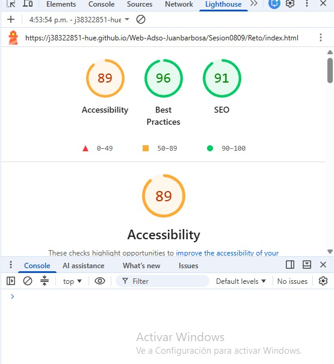
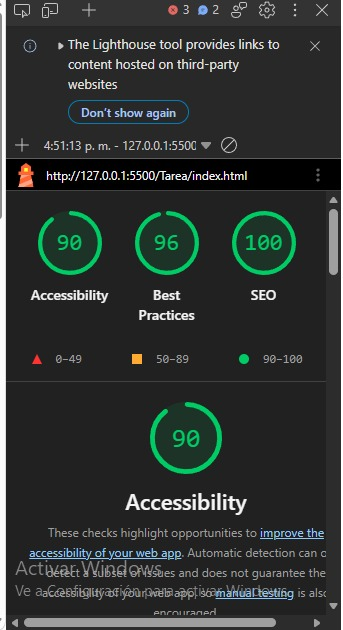

1. Resultados de Rendimiento (Lighthouse)
Versión CSS Puro (Sesión 8)

Evaluación de accesibilidad, buenas prácticas y SEO en incógnito.
Versión Bootstrap (Sesión 13)

Evaluación optimizada utilizando el framework por CDN.
2. Tabla Comparativa de Criterios
| Criterio de Evaluación | Landing Sesión 8 (CSS Puro / Flexbox) | Landing Sesión 13 (Bootstrap 5) |
|---|---|---|
| Puntaje de Rendimiento (Lighthouse) | Alto rendimiento natural por tener menos peso de archivos externos y hojas de estilo propias. | Excelente rendimiento, condicionado levemente por la carga del framework externo vía CDN. |
| Líneas de CSS escritas | Mayor volumen de código propio para configurar contenedores, rejillas y comportamientos responsivos. | Mínimas líneas de CSS personalizado, delegando la maquetación en las clases utilitarias del framework. |
| Tiempo de desarrollo | Más tiempo invertido en definir media queries y ajustar manualmente el diseño en celulares y tablets. | Desarrollo ágil y estructurado gracias al uso inmediato de componentes prefabricados (cards, navbar, grid). |
| Apariencia y Personalización ("Qué tan única se ve") | Diseño 100% original adaptado al detalle visual exacto que se busca para el complejo deportivo. | Apariencia moderna pero estandarizada, requiriendo sobrescribir variables corporativas para salir del diseño genérico. |
| Facilidad para hacerla Responsive | Se requiere codificar y validar manualmente cada regla de adaptación (`@media (min-width: ...)`). | Automatizada mediante el sistema de columnas y prefijos adaptativos (`col-12`, `col-md-6`, etc.). |
3. Conclusión Personal
¿Usarás Bootstrap en el proyecto final o tu propio kit? ¿Por qué?
Para el proyecto final de Arena Gol 5, prefiero inclinarme por desarrollar mi propio kit de estilos con CSS puro (Flexbox y Grid). Aunque Bootstrap optimiza los tiempos de entrega y facilita la maquetación responsiva, maquetar desde cero me otorga un dominio absoluto sobre la interfaz gráfica, la optimización de recursos y la identidad visual de la marca, evitando depender de librerías externas o sobrecargar el código con clases predeterminadas que no se ajustan al 100% a la idea original.